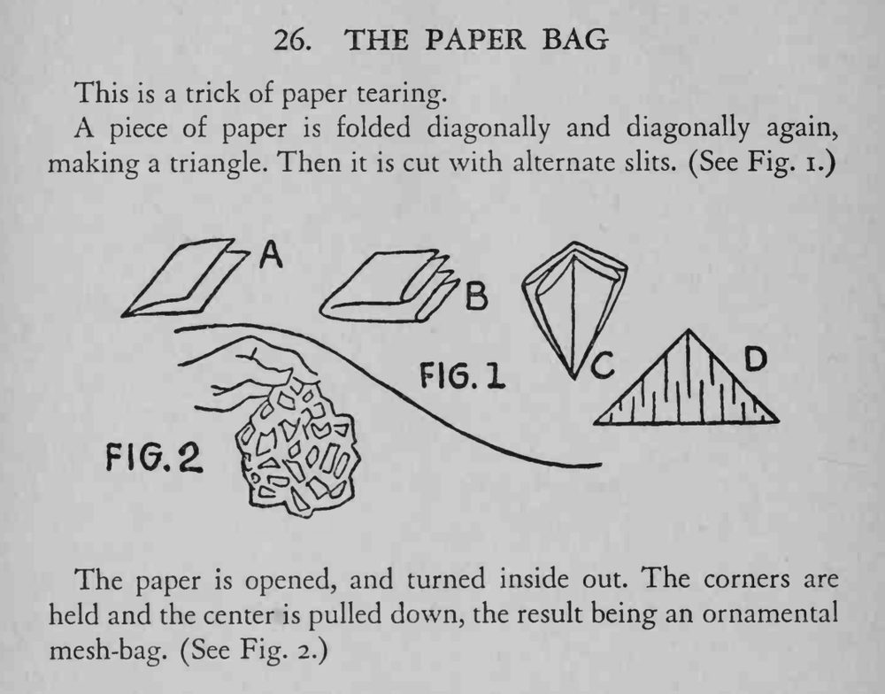

一张普通纸对折两次后剪出一排排切口，展开翻面、捏住四角往下一拉，就变成一只镂空网状的纸袋。
切口要平行均匀、深浅一致，且都要留出边距，否则拉开时容易散架。

This is a trick of paper tearing. A piece of paper is folded diagonally and diagonally again, making a triangle. Then it is cut with alternate slits. (See Fig. i.) The paper is opened, and turned inside out. The corners are held and the center is pulled down, the result being an ornamental mesh-bag. (See Fig. 2.)